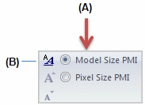

Change PMI text size
There are several ways you can change the size of PMI elements, including the text, leaders, dimension lines, and arrows.
Change PMI element size interactively
-
Choose the PMI tab→Dimension group→Pixel Size PMI command (A).

-
Adjust the default pixel size of 20 up or down by doing the following:
-
Click the Increase PMI Font button to make PMI elements larger by one pixel. The maximum size is 100 pixels.
-
Click the Decrease PMI Font button to make PMI elements smaller by one pixel. The minimum size is 6 pixels.
The size is applied across all of your model documents.
-
Automatically scale PMI elements
Resize PMI elements and edit definition handles automatically when you zoom in and out of the model.
-
Choose the PMI tab→Dimension group→Model Size PMI command.
Tip:-
You can change the size associated with the active style using the Styles command (B), and then use the Model Size PMI option (A) to update the graphics window.

-
The active style size is based on the current value of the Font Size option, as defined in the Modify Dimension Style dialog box.
-
Change the size of new PMI elements by editing the style
-
Choose the PMI tab→Dimension group→Styles command .
Tip:-
You can find the same Styles command on the View tab and on various annotation Properties dialog boxes.
-
-
In the Style dialog box, from the Style Type list, select Dimension.
-
From the Styles list, choose the Style you want to modify, such as ANSI or ISO.
-
Click Modify.
-
In the Modify Dimension Style dialog box, click the Text tab.
-
Type a different value in the Font Size box.
Adjust the text size of individual PMI elements
You can override the default PMI text size by selecting and adjusting the text size of individual PMI elements.
-
In the model document, right-click a PMI dimension or annotation.
-
Do one of the following:
-
(If you selected a dimension) In the Dimension Properties dialog box, click the Text tab.
-
(If you selected an annotation) In the annotation Properties dialog box, click the Text And Leader tab.
Tip:The Properties dialog box varies with the type of annotation selected.
-
-
In the Font Size box, type a new value.
-
Click OK to apply the size to the selected PMI element.